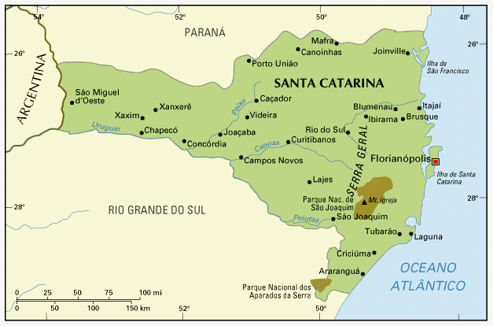

Santa Catarina
𝐒𝐚𝐧𝐭𝐚 𝐂𝐚𝐭𝐚𝐫𝐢𝐧𝐚 𝐞́ 𝐨 𝐦𝐞𝐧𝐨𝐫 𝐞𝐬𝐭𝐚𝐝𝐨 𝐝𝐚 𝐫𝐞𝐠𝐢𝐚̃𝐨 𝐒𝐮𝐥 𝐝𝐨 𝐁𝐫𝐚𝐬𝐢𝐥, 𝐜𝐨𝐦 𝟕,𝟏𝟔𝟓 𝐦𝐢𝐥𝐡𝐨̃𝐞𝐬 𝐝𝐞 𝐡𝐚𝐛𝐢𝐭𝐚𝐧𝐭𝐞𝐬 𝐞 𝐟𝐚𝐳 𝐟𝐫𝐨𝐧𝐭𝐞𝐢𝐫𝐚 𝐜𝐨𝐦 𝐨 𝐏𝐚𝐫𝐚𝐧𝐚́ (𝐚𝐨 𝐍𝐨𝐫𝐭𝐞), 𝐑𝐢𝐨 𝐆𝐫𝐚𝐧𝐝𝐞 𝐝𝐨 𝐒𝐮𝐥 (𝐚𝐨 𝐒𝐮𝐥), 𝐎𝐜𝐞𝐚𝐧𝐨 𝐀𝐭𝐥𝐚̂𝐧𝐭𝐢𝐜𝐨 (𝐋𝐞𝐬𝐭𝐞) 𝐞 𝐀𝐫𝐠𝐞𝐧𝐭𝐢𝐧𝐚 (𝐎𝐞𝐬𝐭𝐞). 𝐄𝐬𝐭𝐞 𝐞𝐬𝐭𝐚𝐝𝐨 𝐞́ 𝐜𝐨𝐧𝐡𝐞𝐜𝐢𝐝𝐨 𝐩𝐨𝐫 𝐬𝐮𝐚𝐬 𝐦𝐨𝐧𝐭𝐚𝐧𝐡𝐚𝐬 𝐞 𝐩𝐫𝐚𝐢𝐚𝐬 𝐭𝐮𝐫𝐢́𝐬𝐭𝐢𝐜𝐚𝐬 𝐜𝐨𝐦 𝐜𝐚𝐫𝐚𝐜𝐭𝐞𝐫𝐢́𝐬𝐭𝐢𝐜𝐚𝐬 𝐝𝐞 𝐚́𝐠𝐮𝐚 𝐜𝐫𝐢𝐬𝐭𝐚𝐥𝐢𝐧𝐚, 𝐫𝐞𝐟𝐮́𝐠𝐢𝐨 𝐧𝐚𝐭𝐮𝐫𝐚𝐥 𝐞 𝐚́𝐠𝐮𝐚𝐬 𝐜𝐚𝐥𝐦𝐚𝐬. 𝐅𝐥𝐨𝐫𝐢𝐚𝐧𝐨́𝐩𝐨𝐥𝐢𝐬, 𝐚 𝐜𝐚𝐩𝐢𝐭𝐚𝐥, 𝐜𝐨𝐧𝐭𝐞́𝐦 𝐜𝐞𝐫𝐜𝐚 𝐝𝐞 𝟓𝟎𝟖.𝟖𝟐𝟔 𝐡𝐚𝐛𝐢𝐭𝐚𝐧𝐭𝐞𝐬 𝐞 𝐞́ 𝐦𝐚𝐢𝐨𝐫𝐢𝐭𝐚𝐫𝐢𝐚𝐦𝐞𝐧𝐭𝐞 𝐜𝐨𝐧𝐬𝐭𝐢𝐭𝐮𝐢́𝐝𝐚 𝐩𝐞𝐥𝐚 𝐈𝐥𝐡𝐚 𝐝𝐞 𝐒𝐚𝐧𝐭𝐚 𝐂𝐚𝐭𝐚𝐫𝐢𝐧𝐚, 𝐜𝐨𝐦 𝟓𝟒 𝐤𝐦 𝐝𝐞 𝐜𝐨𝐦𝐩𝐫𝐢𝐦𝐞𝐧𝐭𝐨.
